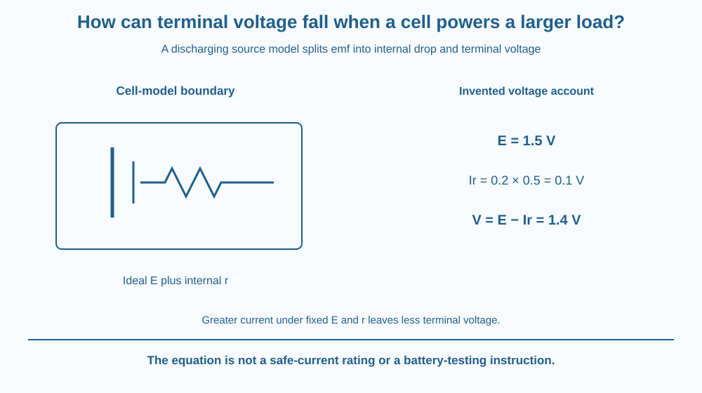

Distinguish a cell's emf from its terminal voltage while delivering current. Use a simple internal-resistance model to explain voltage sag under greater electrical demand. State assumptions and avoid treating a paper equation as a safe current rating or an instruction to test a cell by short circuit.
A cell shows a higher voltage with little demand and a lower voltage while supplying more current. The reading can recover when the demand is removed, even though the cell has not magically regained all the energy it supplied.
The source is not ideal. Some of its energy-per-charge capability is associated with processes inside the cell while current flows. A simplified model represents this using an emf and an internal resistance.
The useful question is which voltage is measured at the external terminals under the stated load.
Emf, written E here, describes the energy supplied per unit charge by the source model. Despite the historical words electromotive force, its unit is the volt, not the newton. It is not a mechanical force.
A simple cell model places an ideal emf in series with an internal resistance, r. When a discharging current I flows, the internal voltage drop is Ir. The external terminal voltage is then V = E − Ir.
As current increases under this model, the internal drop grows and terminal voltage falls. The title's larger load means greater electrical demand, not necessarily a larger resistance number. A lower external resistance can draw more current from the same source model.
For invented values, E is 1.5 volts, r is 0.5 ohms and I is 0.2 amperes. The internal drop is 0.1 volt, leaving a terminal voltage of 1.4 volts. These are model values, not a particular product's measured specification.
With a simple external resistance R, current is E divided by R plus r. The external voltage is also IR. These relations agree when the same circuit and assumptions are used, rather than treating the emf as the unchanged voltage across every load.
At nearly zero current, the internal drop in the model is small, so an appropriate open-circuit reading can approximate emf. That approximation does not imply an instrument draws absolutely no current or that a real cell's chemistry is perfectly constant.
Real cells vary with state of charge, temperature, age and current history. Internal resistance is an approximation that can be useful over a range, not a fixed universal number engraved inside every cell.
A short-circuit calculation is not a safe current rating. Real heating and chemical effects can be hazardous, and the simple model may no longer apply. This lesson remains a paper analysis with no battery connection, probing or improvised load experiment.
Draw a source capability E followed by an internal-drop box and the remaining terminal voltage. Use a consistent energy-per-charge account rather than imagining charge being used up inside the cell.
Increase current in a second model while holding E and r fixed. The Ir box grows and the terminal share shrinks. This makes the cause of voltage sag visible without requiring a detailed repeat of the earlier microscopic resistance lesson.
Add a conditions tag for temperature and state of charge. In a real comparison, changing those along with current can change E or r too. The tag prevents the simple proportional model from being treated as a complete battery simulation.
The SVG shows the ideal emf and internal resistance inside a cell-model boundary, with an external load beyond the terminals. A voltage account labels E, Ir and V separately.
The invented numerical example gives 1.5 − 0.1 = 1.4 volts. A comparison arrow increases current and shows the growing internal drop under fixed model parameters.
The diagram is conceptual and contains no practical terminals to connect or short. Its caption states that real cell conditions vary and that the equation supplies neither a product rating nor a safe test procedure.

Battery-powered devices can respond to voltage changes under demand. A low-demand reading alone may not describe how a source behaves while powering the intended task.
Different cells and operating conditions can show different responses. A classroom model should not be used to diagnose or repair a real rechargeable pack, substitute incompatible cells or infer a safe discharge limit.
Students in India can learn the distinction through supplied data without buying test equipment or opening a device. Any actual battery issue should follow the product's appropriate adult-managed guidance, not an improvised classroom short-circuit trial.
Use paper, a pencil and a calculator if needed.
Do not attach any wires or batteries. Add a clear note that the result is not a safe-current specification. The activity tests a conditional source model and avoids a physical demonstration whose heating and chemistry would introduce unmeasured risks.
Why can a cell's terminal voltage rise after a load is removed without implying that no energy was delivered? Use the reduction of the current-dependent drop in your answer.
Now compare two measurements taken at different temperatures. Which assumption would need checking before attributing the entire voltage change to external demand? A real observation can change several source properties together.
What unit describes emf in this model?
Answer: A — Emf is energy per charge, so its unit is the volt despite the historical name.
Why does terminal voltage fall as model current increases?
Answer: B — With E and r fixed, increasing I increases the amount subtracted from E.
Invented E = 1.5 V, r = 0.5 Ω and I = 0.2 A. What is V?
Answer: C — Ir is 0.1 volt, so E minus Ir is 1.4 volts.
Create a voltage-account card with emf, current, internal resistance, internal drop and terminal voltage. Use the invented example and label all assumptions.
Correct the statement that a larger electrical demand must leave terminal voltage unchanged because the cell has one printed voltage. Include one reason the real source can depart from the simple model, without recommending any practical battery test.
A source can have a useful energy-per-charge capability that differs from the voltage available at its terminals under demand. The difference belongs to the operating system, not merely a bad label. Understanding the load condition makes a voltage reading more informative than treating it as a permanent property independent of current.
For a discharging cell model, terminal voltage is E − Ir; greater current increases the internal drop, while real source conditions limit the approximation.